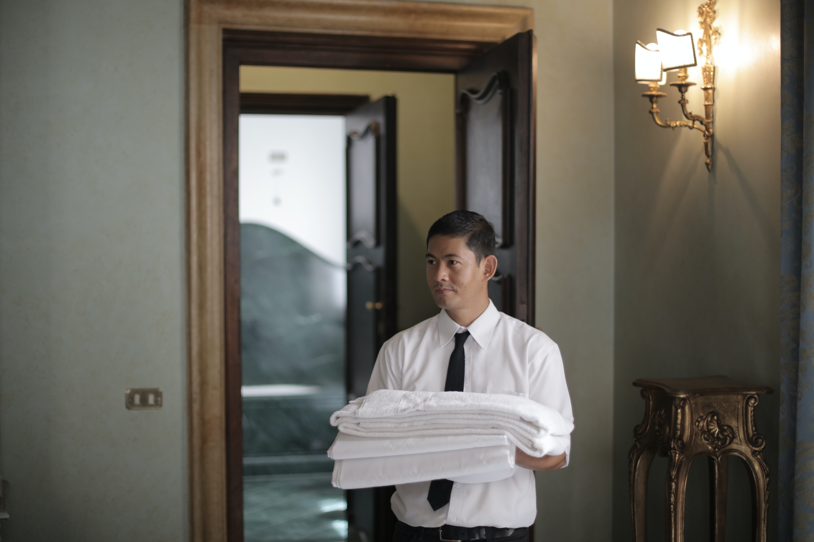
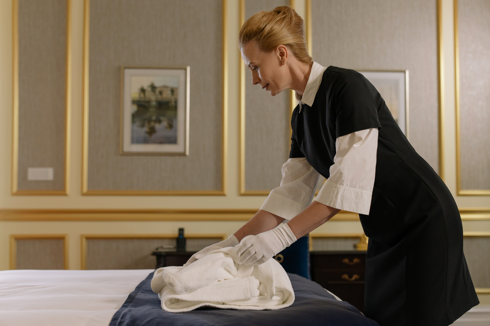

Servicios a la habitacion
Publicado en Septiembre de 2023 por Equipo Adso-2560664-A
Sin duda, el servicio de habitaciones de los hoteles es una vara de medir muy importante a la hora de elegir el hotel perfecto. Muchas personas se centran en algo especial y que diferencie el hotel de los demás, como una grande y elegante spa o un servicio de animación para niños que ayude los padres a descansar tras un año entero haciendo malabares con la escuela, los deportes y las rabietas.
¿Cómo funciona el servicio de habitaciones en nuestro hotel?
El funcionamiento del servicio de habitaciones es relativamente sencillo. Basta con que el cliente se comunique telefónicamente con la recepción del hotel para que, en cuestión de minutos, esté el personal idóneo atendiendo la solicitud del huésped en la puerta de su habitación. Para servicios premium que necesitan una mayor organización, el hotel puede reservarse la posibilidad de pedir la reserva de tal servicio de habitación con X días de adelanto. En general, aunque el teléfono sea el medio de comunicación más común, algunos hoteles han apostado por la tecnología digital. Esto quiere decir que, muchas de estas peticiones se pueden hacer directamente desde una aplicación propia del hotel. Todo esto, obviamente, no excluye el clásico intemporal de la petición directamente en la recepción.
